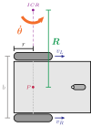
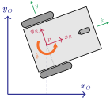

Clase 10 - Taller de resolución
Cinemática de un robot diferencial

Modelo cinemático directo
- Dada las velocidades angulares de las ruedas (derecha \(\textcolor{Blue}{\upsilon_R}\) e izquierda \(\textcolor{Blue}{\upsilon_L}\)) y las propiedades geométricos del robot (separación entre las ruedas \(\textcolor{Gray}{b}\) y radio de las ruedas \(r\)), calcular su velocidad angular \(\textcolor{Orange}{\dot\theta}\) y radio de giro \(\textcolor{ForestGreen}{{R}}\) al rededor del \(\textcolor{Plum}{ICR}\):
\[ {\Large \begin{split} \textcolor{Orange}{\dot\theta} = \frac{r}{\textcolor{Gray}{b}}(\textcolor{Plum}{\dot\phi_R} - \textcolor{Plum}{\dot\phi_L}) \end{split} \quad\quad\quad \begin{split} \textcolor{ForestGreen}{{R}} = \frac{\textcolor{Gray}{b}}{2} \frac{\textcolor{Plum}{\dot\phi_R} + \textcolor{Plum}{\dot\phi_L}}{\textcolor{Plum}{\dot\phi_R} - \textcolor{Plum}{\dot\phi_L}} \end{split} } \]
Modelo cinemático inverso
- Dada la velocidad lineal \(\textcolor{ForestGreen}{\dot{x}}\) y la velocidad angular \(\textcolor{Orange}{\dot\theta}\) del robot junto con las propiedades geométricas (separación entre las ruedas \(\textcolor{Gray}{b}\) y radio de las ruedas \(r\)), calcular las velocidades angulares de la rueda derecha \(\textcolor{Blue}{\upsilon_R}\) e izquierda \(\textcolor{Blue}{\upsilon_L}\):
\[ {\Large \begin{cases} \textcolor{Plum}{\dot\phi_R} = \frac{1}{r} (\textcolor{ForestGreen}{\dot{x}} + \frac{\textcolor{Gray}{b}}{2} \textcolor{Orange}{\dot\theta}) \\[0.5em] \textcolor{Plum}{\dot\phi_L} = \frac{1}{r} (\textcolor{ForestGreen}{\dot{x}} - \frac{\textcolor{Gray}{b}}{2} \textcolor{Orange}{\dot\theta}) \end{cases} } \]
Marco inercial

- Pose en el marco de referencia local del robot \(\textcolor{Maroon}{\mathcal{P}: \{ \mathcal{X}_R, \mathcal{Y}_R \}}\)
\[ {\Large {}^\textcolor{Maroon}{R} \boldsymbol{\dot \xi} = \sideset{^\textcolor{Maroon}{R}}{}{\begin{bmatrix} \textcolor{ForestGreen}{\dot{x}} \\ \textcolor{ForestGreen}{\dot{y}} \\ \textcolor{Orange}{\dot\theta} \end{bmatrix}} = \begin{bmatrix} \frac{r}{2} & \frac{r}{2}\\ 0 & 0\\ \frac{r}{\textcolor{Gray}{b}} & - \frac{r}{\textcolor{Gray}{b}} \end{bmatrix} \begin{bmatrix} \textcolor{Plum}{\dot\phi_R} \\ \textcolor{Plum}{\dot\phi_L} \end{bmatrix} } \]
- Pose en el marco de referencia inercial (global) \(\textcolor{Blue}{\mathcal{O}: \{ \mathcal{X}_O, \mathcal{Y}_O \}}\)
\[ {\Large {}^\textcolor{Blue}{O} \boldsymbol{\dot\xi}_\textcolor{Maroon}{R} = \boldsymbol{R}(\textcolor{Orange}{\theta}) {}^\textcolor{Maroon}{R} \boldsymbol{\dot\xi}_\textcolor{Maroon}{P} = \begin{bmatrix} \cos{\textcolor{Orange}{\theta}} & -\sin{\textcolor{Orange}{\theta}} & 0 \\ \sin{\textcolor{Orange}{\theta}} & \cos{\textcolor{Orange}{\theta}} & 0 \\ 0 & 0 & 1 \end{bmatrix} \begin{bmatrix} \frac{r}{2} & \frac{r}{2}\\ 0 & 0\\ \frac{r}{\textcolor{Gray}{b}} & - \frac{r}{\textcolor{Gray}{b}} \end{bmatrix} \begin{bmatrix} \textcolor{Plum}{\dot\phi_R} \\ \textcolor{Plum}{\dot\phi_L} \end{bmatrix} } \]
Resolución ejercicios 5 al 8
Calcular la velocidad lineal y angular del robot y de las ruedas para que se complete:
- una trayectoria recta de 1[m] en 10 [s].
- una trayectoria circular con un radio de 0.5 [m] en sentido horario en 20 [s].
Examinar la definición de los mensajes de tipo geometry_msgs/Twist y describir cuál sería la secuencia de comandos de velocidad a aplicar al robot para seguir la trayectoria mostrada en la Figure 1 utilizando dichos mensajes. La velocidad máxima de giro de los motores es de \(50 [rpm]\).
El punto inicial del robot será asignado por el docente.
Examinar la definición de los mensajes del topic suscripto por el JointGroupVelocityController. Calcule las velocidades angulares de las ruedas para cada comando del ejercicio 6 y construya la secuencia de mensajes de comando correspondientes.
El campo layout no se debe completar.
Dentro del paquete (*)_control, cree un nodo que reciba comandos de tipo geometry_msgs/Twist a través de un topic llamado cmd_vel, calcule las velocidades angulares en base al modelo cinemático inverso del robot y escriba los comandos de velocidad de cada rueda de tracción en los topics left_wheel_cmd y right_wheel_cmd. Tenga en cuenta que los parámetros del robot se encuentran en el robot description.